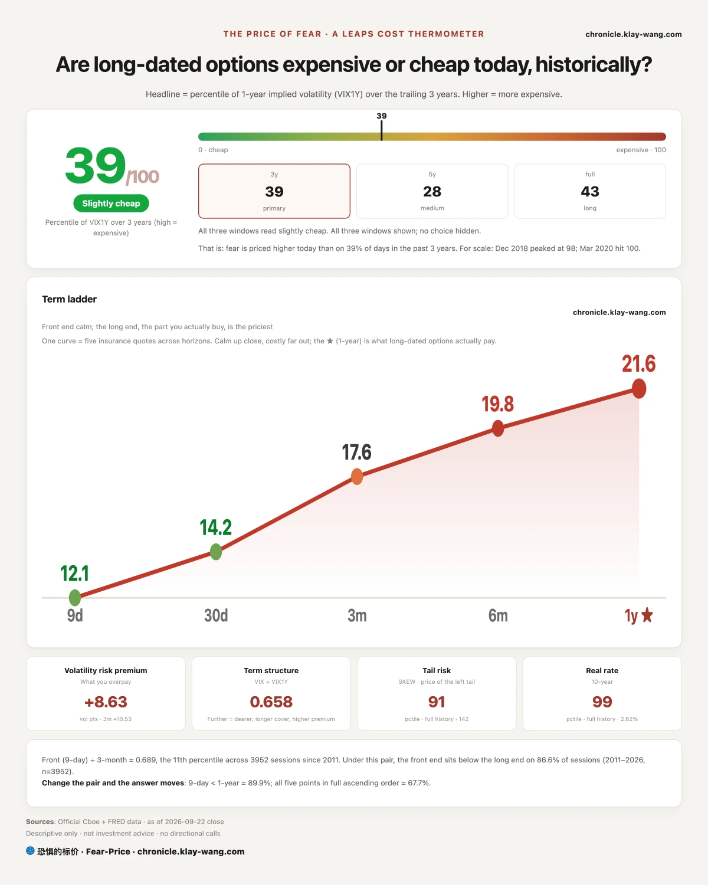
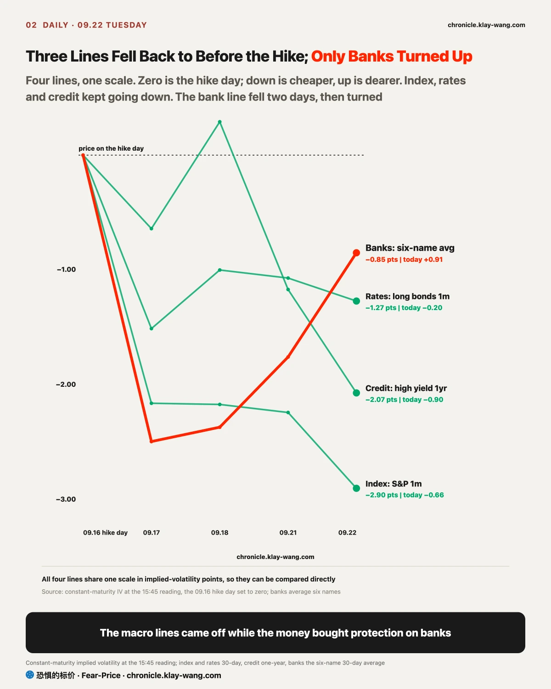
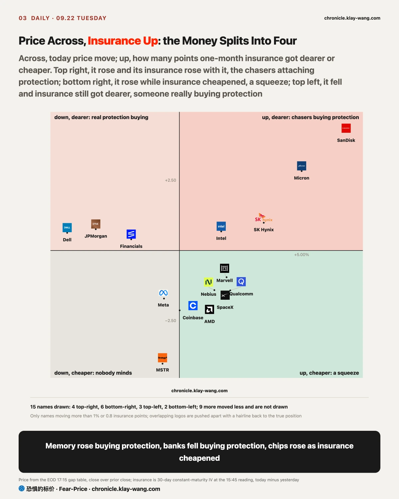
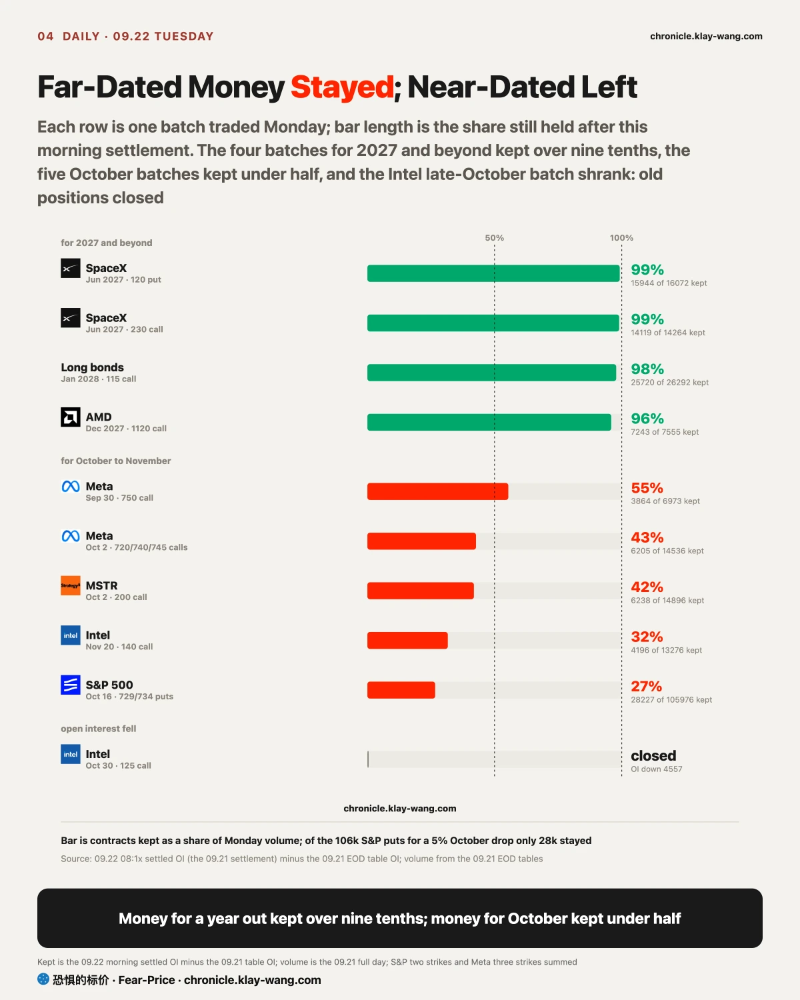
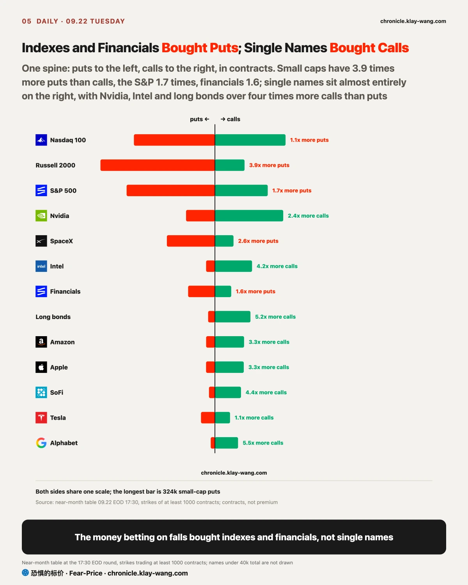
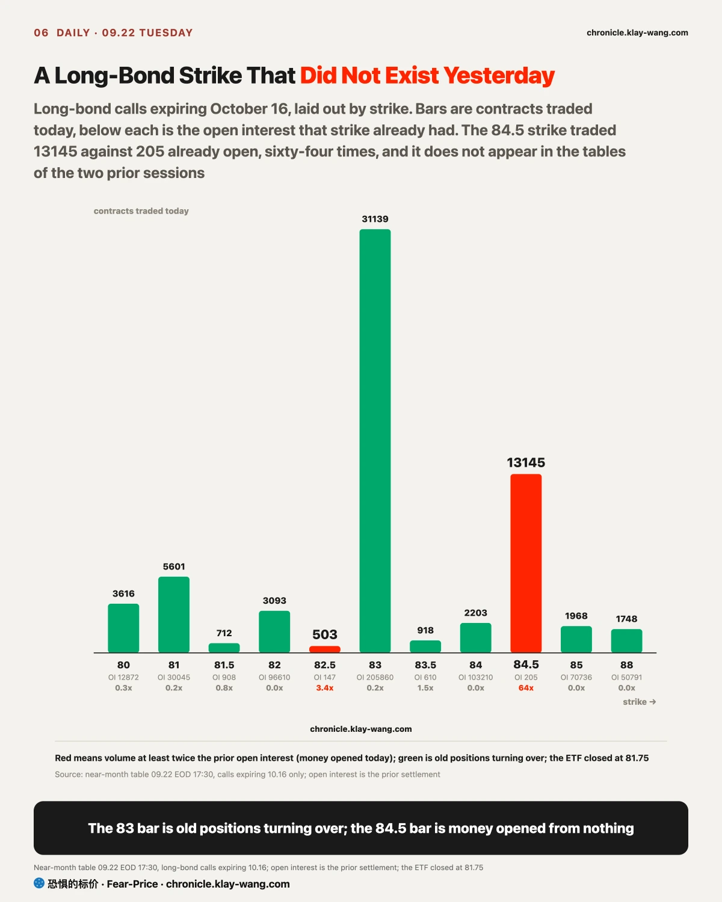
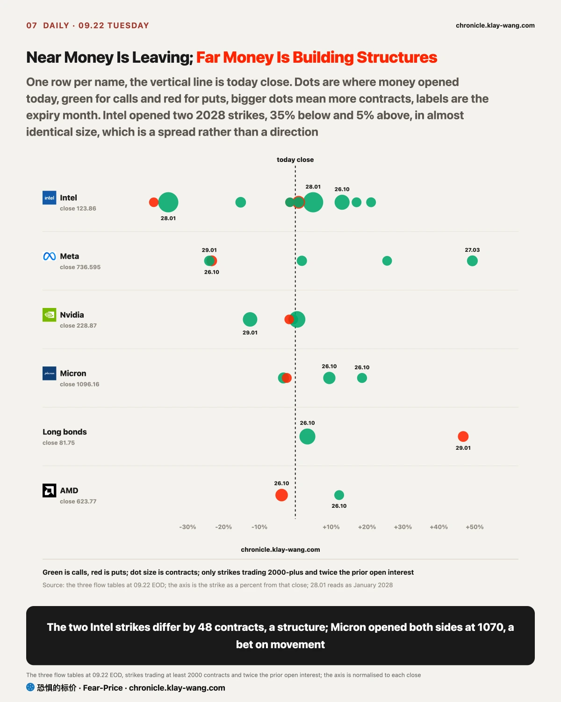

Fear-Price Index · Sep 22, 2026 · reading 39.0/100: one-year volatility VIX1Y at 21.59, in the 39.0th percentile of the past three years, where high means expensive. Daily ledger and definitions → chronicle.klay-wang.com · Please credit: Fear-Price Index
It was 43.0 yesterday and 39.0 today, so one-year insurance got cheaper again. The term ladder climbs from 12.13 at nine days to 21.59 at one year, the nine-day reading more than nine points below the one-year, which is the market saying nothing happens in the next few days and the far end is another question. VIX is 14.21 and CNN Fear and Greed is 35.3, so the K index that divides one by the other is 2.481: slightly more people say they are worried than yesterday and slightly fewer pay for protection, and K would need VIX above 35 to fall through 1. History at chronicle.klay-wang.com/kindex, the index itself at chronicle.klay-wang.com/fear-price. For you: a year of protection on the whole book costs a little less than yesterday, and it has cost a little less four days running.

The S&P closed at 773.38, twelve cents below yesterday, down 0.02%. The number says nothing happened, and it covers a whole day of moving house.
Financials were the worst block today, the sector down 1.97%, JPMorgan down 3.42% and down from the opening bell all the way to the close, American Express down 2.72%, Visa down 2.14%, Mastercard down 2.07%, Goldman down 1.03% and back below its 200-day line. The volume came with it: the sector traded 2.28 times yesterday, Amex 2.05 times, JPMorgan 1.78 times. Heavy volume plus a one-way slide is someone delivering stock, not an absence of buyers.
What was bought is what nobody wanted yesterday. SanDisk opened 0.52 lower, was bought 7.37 points through the session and closed up 6.82%; Micron opened 1.06 lower, was bought 6.13 and closed up 5.00%; SK Hynix rose 3.45%. Opening below the prior close and finishing that far up says this money was bought one order at a time in the session, with overnight news contributing little. The three CPU leaders from yesterday traced the same shape: Intel opened 1.34 lower, was bought 3.09 and closed up 1.71%; AMD opened 1.45 lower, was bought 2.84 and closed up 1.34%; Qualcomm rose 2.08%.

Set the insurance on each layer on the hike day to zero and here is where four of them stand today: S&P one-month insurance is 2.90 points cheaper than that day, long bonds 1.27 cheaper, high-yield credit at one year 2.07 cheaper, all three falling back. The six-bank one-month average is only 0.85 cheaper than that day, and it rose 0.91 in today alone, the only one of the four moving up.
Name by name: Wells Fargo one-month from 29.74 to 31.92, Citi 32.72 to 33.88, Bank of America 26.50 to 27.33, regional banks 23.10 to 23.92, JPMorgan 26.35 to 27.11. The Goldman one-month did not move, but its one-year went from 34.19 to 36.15. The 34.14 level is the line I wrote down last week for withdrawing the call; yesterday it came within 0.05 of it, and today it moved almost two points the other way. What I said last week, that the stock market prices this hike as one and the bond market prices three or four and the gap between them lands on the banks, was not knocked down today, and it got stronger.
On the banks, someone has positioned out to 2027. Financial-sector March 2027 55 calls traded 38006 contracts, 1.77 times open interest; the 54 puts at the same expiry traded 37768, 5.15 times; June 2027 75 calls another 10998. Thirty and forty thousand contracts on both sides of the same expiry on the same day is not a bet on direction, it is someone drawing both edges around a bank position eighteen months out. There are also 19984 November 20 50 puts in the near-month table.
One thing here reads backwards easily: bank insurance got dearer in points, and in money it barely moved. The JPMorgan one-month rose 0.76 points while the stock fell 3.42%, and the two cancel, so a month of protection on 100 shares costs about what it did yesterday. The sector is the same, points up and money only 0.6% dearer. What genuinely got dearer is Goldman at one year, by about 4.6%.

Put every name that moved today on one chart, price across and the change in one-month insurance up. Each quadrant means something different.
Top right, rose with insurance rising too, six names, and all three memory names are here. SanDisk rose 6.82% while its one-month insurance went from 70.86 to 75.29, so a month of protection on 100 shares costs about 14% more in a day; Micron rose 5.00% and its protection is about 9.9% dearer. A stock rising with its insurance has one reading, the buyers attaching their own protection. A short squeeze does not look like this; there the insurance cheapens.
Top left, fell with insurance still rising, four names, JPMorgan and the financial sector among them, and Dell down 4.59%. Insurance getting dearer on the way down is someone really buying protection for what comes next, not passive selling.
Bottom right, nine names, rose while insurance cheapened, and most of the chip leaders from yesterday are here. AMD rose 1.34% with insurance 2.15 points cheaper, Qualcomm rose 2.08% with insurance 1.42 cheaper. Yesterday I wrote that one app repriced the CPU; the second day of that story looks like this, the prices still rose and the chasers stopped paying up for protection. Keep the two apart: Intel is the exception, its insurance rose again today and at 72.86 is still the dearest in the table.
Bottom left, three names fell with insurance cheaper too, MSTR and Meta among them, which says nobody took the fall in them today seriously.

The ten heaviest batches from yesterday split in two at the settlement this morning. The four for 2027 and beyond barely lost a contract: both legs of the SpaceX June collar kept 99%, the January 2028 long-bond 115 calls 98%, the December 2027 AMD 1120 calls 96%. The five for October kept under half: the two S&P puts for a 5% drop by mid-October kept 27%, the three Meta pre-event strikes 43%, MSTR 42%.
My line from yesterday sat on the near end, which is where it failed. I wrote that people fully loaded in single names were buying the cheapest index protection, on the strength of 106k contracts in those two S&P puts; this morning only 28k were left. What stayed is still five times the prior open interest, so index protection was bought, just not at the size I said, and I withdraw that line. Nvidia went the other way the same day: the November 20 230 calls lost only 1570 contracts, so the year-end bet moved forward to earnings week and that call stands.
Now the money opened today. Intel January 2028 130 calls traded 23605, 6.29 times open interest, and the 80 calls at the same expiry another 23557; Nvidia January 2029 200 calls traded 10060 against open interest of 274. That is money for three years out and has nothing to do with the few points today. For next week, calls expiring October 2 carry 399 million dollars against 61 million in puts, puts at 13.3% against 8.4% yesterday. Micron alone is 172 million of the calls, the largest in the field, and it reports next Wednesday.
The near-month layer split most clearly today. Small-cap puts for mid-October outnumber calls 3.9 to one, 236k contracts across the 272, 273 and 274 strikes; SpaceX 2.6 to one, the S&P 1.7, financials 1.6. Single names sit on the other side: Nvidia calls outnumber puts 2.4 to one, Intel 4.2, long bonds 5.2, Broadcom 19. The money betting on falls bought indexes and financials, not single names.
The cleanest new money today sits in long bonds. The October 16 84.5 calls traded 13145 contracts against 205 already open, sixty-four times, and that strike does not appear in the tables of the two prior sessions, when only the 83 and 84 strikes were moving. The 83 strike traded more today, 31139, but against 206k open it is 0.2 times, old positions turning over. The ETF closed at 81.75 and 84.5 sits 3.4% above. The backdrop is rate insurance, MOVE at 78.56 in the 28.4th percentile of three years, the lowest since the decision. With rate insurance at its cheapest, someone opened a strike nobody had been using.
Lay today new money out by distance from the close and the picture inverts yesterday. Yesterday the near money left and the far money stayed; today the near money is still leaving while the far money builds structures. Intel opened January 2028 on both sides at once, 23557 of the 80 calls 35% below and 23605 of the 130 calls 5% above, a difference of 48 contracts, equal size on both legs, which makes it a spread; it also opened the June 2027 100 and 125 puts. Micron opened both the call and the put at 1070, a straddle, a bet on the size of the move, with earnings next Wednesday and its insurance in the cheapest fifth of the year. Nvidia opened 10060 January 2029 200 calls against 274 open, with one-month insurance in the 1.6th percentile, the cheapest in the table. The cheapest insurance paired with the furthest bet.

If you hold memory: SanDisk and Micron opened lower and were bought, and the buyers attached their own protection, a month of it costing ten to fifteen percent more. The Micron report next Wednesday is where this group settles. In this spot, if it were me, I would either wait for the report and see how much stays, or lock half of it in while the insurance is not yet extreme.
If you hold banks: sold as a block on twice the usual volume, sold while insurance got dearer, and with someone drawing both edges out to 2027. The gap I wrote about last week is still there. Skip tomorrow price move. Watch instead for the day the Goldman one-year insurance starts falling, because that day says this has passed.
If you hold index funds: S&P one-month insurance is 11.56, in the cheapest tenth of three years, and the one-year has been cheapening four days running. The index closed flat today while the turnover inside it was violent. Protection is cheapest on days that look this quiet.